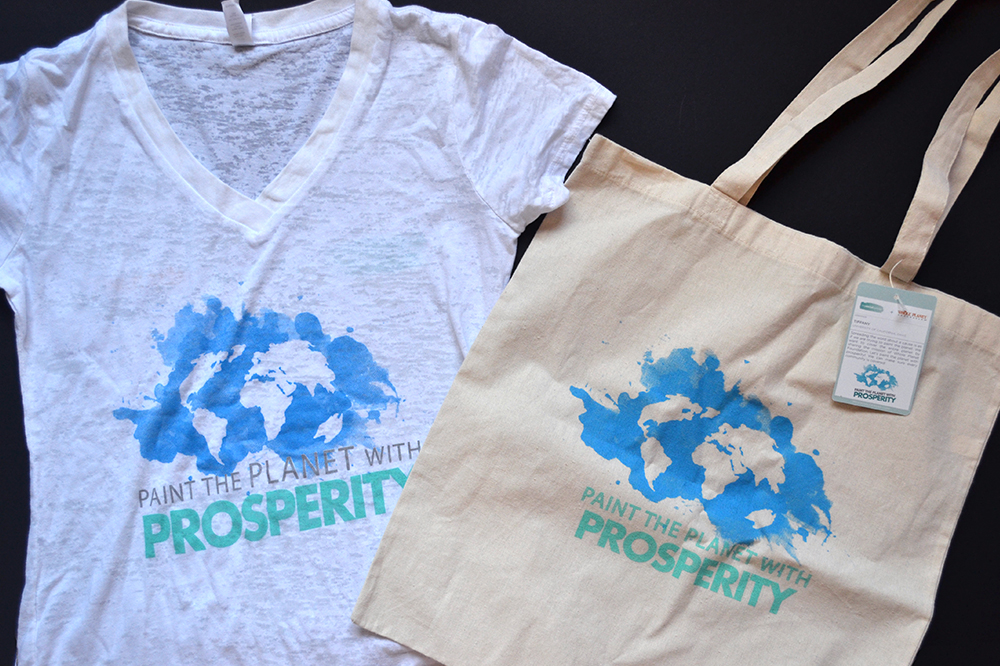
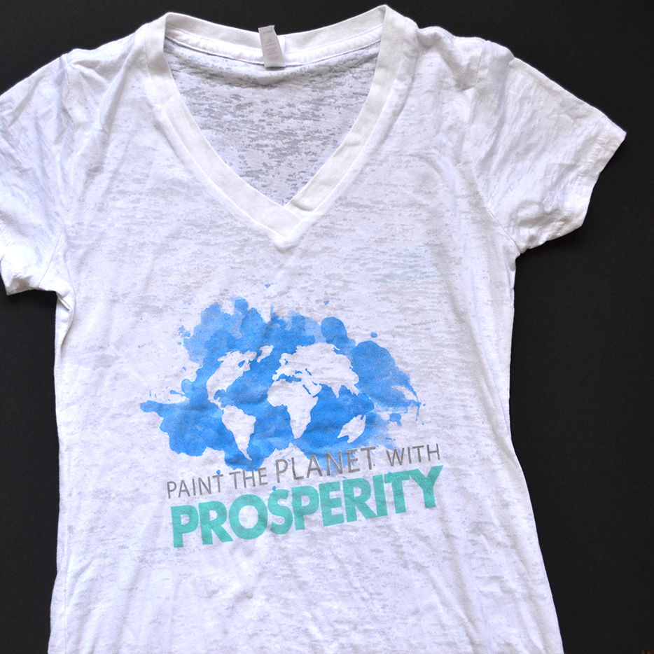
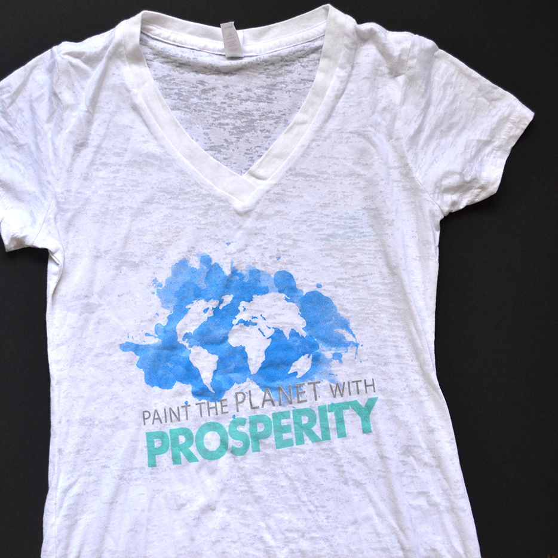

This was one of the winning designs for the My Social Canvas + Whole Planet Foundation design contest. My graphic (with text added in by My Social Canvas) was printed onto T-shirts and canvas tote bags and were sold in stores at Whole Foods Market.
I created this design to show that spreading the word about a cause is similar to painting the planet. Before design, I mainly focused on art and traditional media such as painting and drawing. I was inspired by the process of painting a picture. It starts with just simply getting a paintbrush and some paint and then putting the paint onto the canvas until every part is covered in paint. The concept was to cover the entire planet with the mission of Whole Planet Foundation. By "painting the planet with prosperity" we can make sure every community is covered.
 
